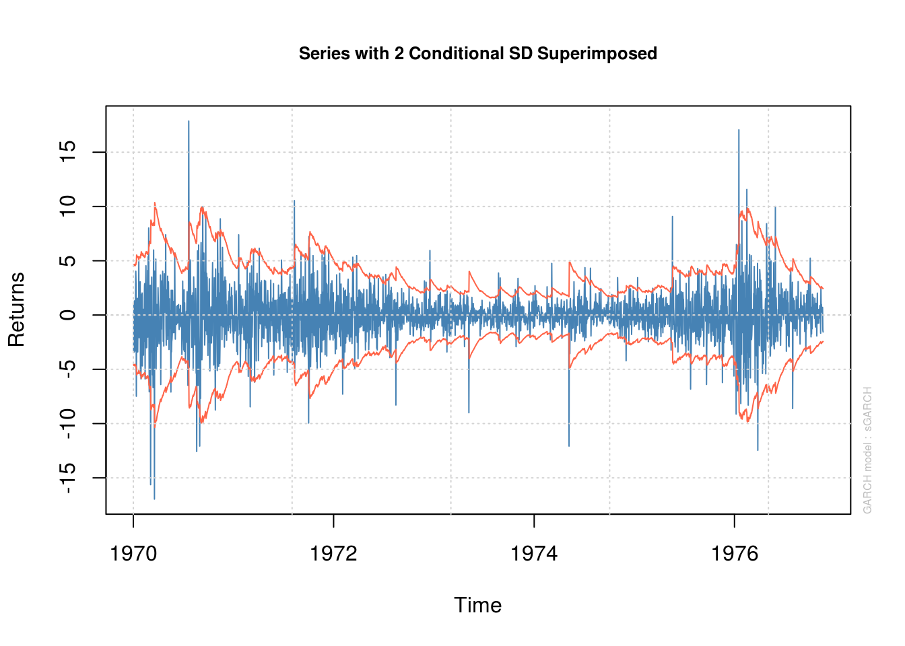
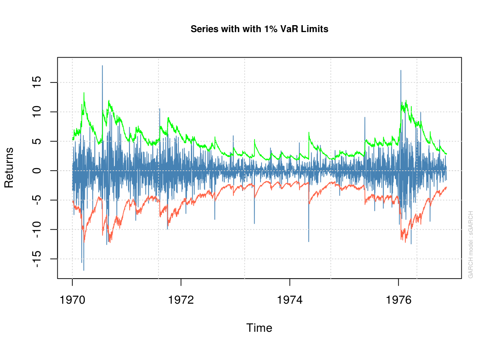
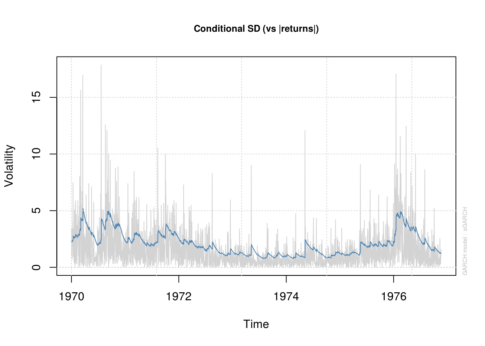
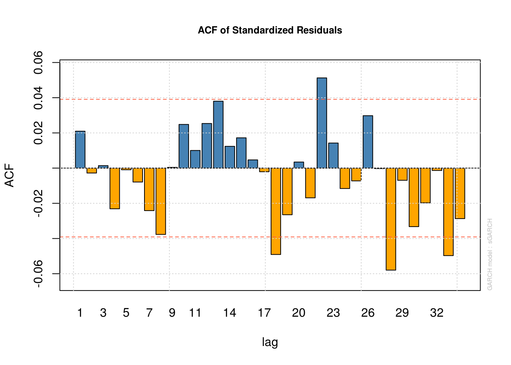
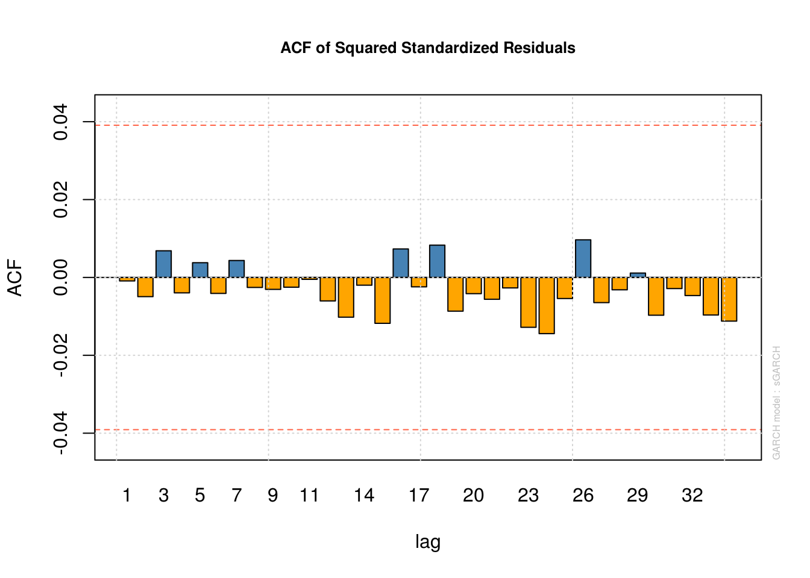
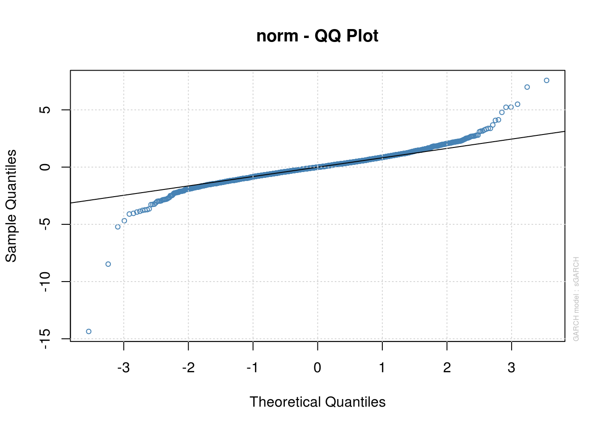
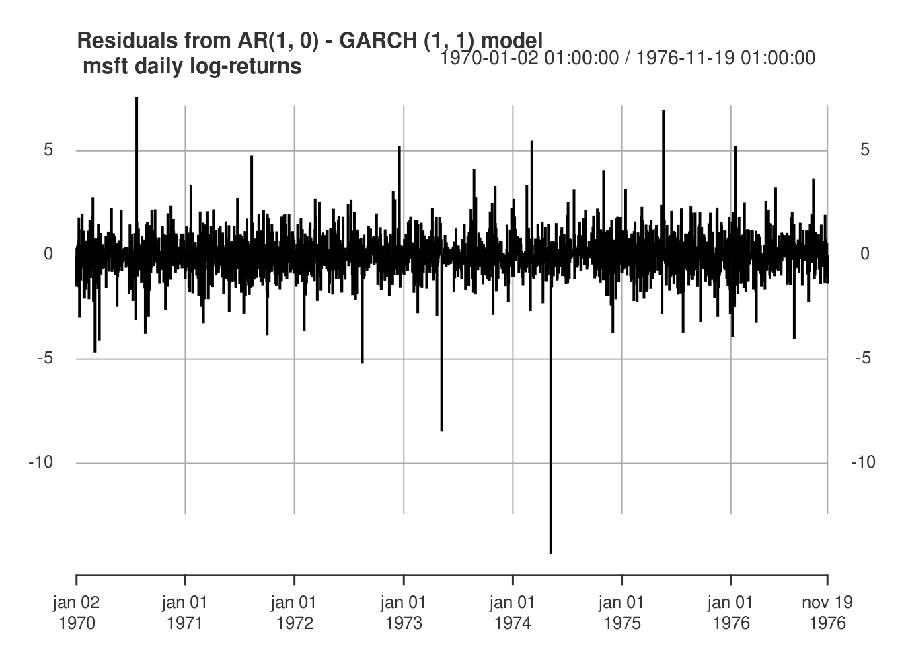

5.4 Generalized Autoregressive Conditional Heteroskedasticity (GARCH) models and extensions
We look at estimation of (G)ARCH models. The simple ARMA(\(p, q\))-GARCH(\(m, r\)) model is \[ \begin{align*} Y_t -\mu &= \sum_{h = 1}^p \phi_h (Y_{t-h}-\mu)+ \sum_{l = 1}^q \vartheta_lV_{t-l}+ V_t, \qquad V_t = \sigma_t\varepsilon_t, \quad\varepsilon_t\stackrel{\mathrm{iid}}{\sim} F(0, 1) \\ \sigma^2_t &= \alpha_0+\sum_{i = 1}^m \alpha_iV_{t-i}^2 + \sum_{j = 1}^r \beta_j\sigma^2_{t-j}. \end{align*} \] The residuals from the ARMA models, \(V_t\) thus follow a GARCH model. The parameters of the GARCH \(\alpha_0, \alpha_1, \ldots, \alpha_m, \beta_1, \ldots, \beta_r\) must be positive. Furthermore, for the variance \(\sigma^2_t\) to be stationary, we require \(\sum_{i=1}^m \alpha_i + \sum_{j=1}^r \beta_j <1\), akin to the ARMA setting. The \(V_t\) are typically leptokurtic (and thus heavy-tailed) as a result of the conditional heteroscedastic structure.
If we have \(V_t=\sigma_t^2\varepsilon_t\), where \(\varepsilon_t \stackrel{\mathrm{iid}}{\sim}F(0, 1)\) is iid white noise, then \[\mathrm{E}(V_t^2 \mid \mathcal{H}_{t-1}) = \sigma^2_t.\] Here, \(\mathcal{H}_{t-1}\) denotes the information set at time \(t-1\). One can see that \(V_t^2\) has the form of an ARMA(\(m, r\)) process, but the iid white noise is replaced with a martingale difference sequence \(\eta_t\). We can rewrite \[V_t^2 -\nu = \sum_{i=1}^{\max\{m, r\}} (\alpha_i+\beta_i)(V_{t-i}^2-\nu) - \sum_{j=1}^r \beta_j \eta_{t-j} + \eta_t,\] where \(\nu = \alpha_0/ \sum_{i=1}^{\max\{m, r\}}(\alpha_i+\beta_i)\), and we define for simplicity \(\alpha_i=0\) for \(i>m\) and \(\beta_j\) for \(j>r\). We can identify from there the AR coefficients \(\tilde{\phi}_i=\alpha_i+\beta_i\) and the MA coefficients \(\tilde{\theta}_j=-\beta_j\). A necessary condition for covariance stationarity is that \(\sum_{i=1}^m \alpha_i + \sum_{j=1}^r \beta_j <1\), The strategy for modelling is thus to fit an ARIMA-type model to the original series, then examine squared residuals. One suitable orders \(p, q, m, r\) have been determined, we can estimate the models jointly. The autocorrelation function of the GARCH(1,1),
\[ \begin{align} \rho(1) &= \frac{\alpha_1(1-\beta_1^2-\alpha_1\beta_1)}{(1-\beta_1^2-2\alpha_1\beta_1)} \\ \rho(h) &= (\alpha_1+\beta_1)\rho(h-1), \quad h \geq 2, \end{align} \] decays geometrically at rate \(\alpha_1+\beta_1\).
Joint estimation of ARMA-GARCH type models can be handled with functions from the rugarch package. Apart from the documentation of the package, there is a worked out example here and more examples on the package author’s blog. You can specify different types of GARCH model other than the standard GARCH, or sGARCH, add external regressors and choose the distribution function of the errors. This provides a neat way to include an ARMA-GARCH type model for your analysis.
How does one proceed with the estimation of a GARCH model? Maximum likelihood is the standard option, but the MLE must be found numerically. This function from a preprint by Würtz, Chalabi and Luskan, shows how to construct the likelihood for a simple GARCH(1,1) model.
# From Wurtz, Chalabi, Luskan (JSS)
garch11Fit = function(x) {
require(numDeriv)
# Step 1: Initialize Model Parameters and Bounds:
Mean = mean(x)
Var = var(x)
S = 1e-06
params = c(mu = Mean, omega = 0.1 * Var, alpha = 0.1, beta = 0.8)
lowerBounds = c(mu = -10 * abs(Mean), omega = S^2, alpha = S, beta = S)
upperBounds = c(mu = 10 * abs(Mean), omega = 100 * Var, alpha = 1 - S, beta = 1 -
S)
# Step 2: Set Conditional Distribution Function:
garchDist = function(z, hh) {
dnorm(x = z/hh)/hh
}
# Step 3: Compose log-Likelihood Function:
garchLLH = function(parm) {
mu = parm[1]
omega = parm[2]
alpha = parm[3]
beta = parm[4]
z = (x - mu)
Mean = mean(z^2)
# Use Filter Representation:
e = omega + alpha * c(Mean, z[-length(x)]^2)
h = filter(e, beta, "r", init = Mean)
hh = sqrt(abs(h))
-sum(log(garchDist(z, hh))) #llh
}
# print(garchLLH(params)) Step 4: Estimate Parameters and Compute
# Numerically Hessian:
fit = nlminb(start = params, objective = garchLLH, lower = lowerBounds,
upper = upperBounds)
Hessian <- numDeriv::hessian(func = garchLLH, x = fit$par)
# Step 5: Create and Print Summary Report:
se.coef = sqrt(diag(solve(Hessian)))
tval = fit$par/se.coef
matcoef = cbind(fit$par, se.coef, tval, 2 * (1 - pnorm(abs(tval))))
dimnames(matcoef) = list(names(tval), c(" Estimate", " Std. Error", " t value",
"Pr(>|t|)"))
cat("\nCoefficient(s):\n")
printCoefmat(matcoef, digits = 6, signif.stars = TRUE)
}We consider in the sequel the log-returns of the Microsoft stock.
library(tseries) #to extract quotes from internet
#Obtain Microsoft series from Internet
msft.prices = get.hist.quote(
instrument = "MSFT",
quote = "Close", #adjusted does not exist anymore
provider = c("yahoo"), origin = "1999-12-30", start="2000-01-01", end="2010-01-01",
retclass = c("zoo"), quiet = FALSE, drop = FALSE)time series starts 2000-01-03
time series ends 2009-12-31#Transform to log-returns
msft <- as.data.frame(msft.prices)
N <- length(msft[, 1])
msft.returns <- 100*(log(msft[2:N, ])-log(msft[1:(N-1), ]))Now that we have our financial time series, we can try fitting a GARCH model to it. We start with the code provided above.
# Fit with function akin to that found in library(fGarch)
garch11_model <- garch11Fit(msft.returns)
Coefficient(s):
Estimate Std. Error t value Pr(>|t|)
mu 0.00428664 0.03218567 0.13318 0.89405
omega 0.07139907 0.01408702 5.06843 4.0111e-07 ***
alpha 0.08454825 0.01262800 6.69530 2.1523e-11 ***
beta 0.90354370 0.01320064 68.44697 < 2.22e-16 ***
---
Signif. codes: 0 '***' 0.001 '**' 0.01 '*' 0.05 '.' 0.1 ' ' 1kurtosis_garch11 <- function(alpha1, beta1) {
3 * (1 + alpha1 + beta1) * (1 - alpha1 - beta1)/(1 - beta1^2 - 2 * alpha1 *
beta1 - 3 * alpha1^2)
}
kurtosis_garch11(garch11_model[3, 1], garch11_model[4, 1])[1] 7.573766The parameter estimates for the parameters \(\alpha_1\), \(\beta_1\) are typical of those of stock returns (\(\alpha_1\) small, \(\beta_1\) large, their sum close to 1). The parameter \(\alpha_0\) is the positive constant \(\alpha_0\), which is small. For the process to be covariance stationary (meaning it has finite fourth moments), we need \(\alpha_1+\beta_1<1\). The closer the sum \(\alpha_1+\beta_1\) to 1, the slower is the decay in the autocorrelation function of squared residuals. Here, the estimates are 0.9880919, which is close to the boundary and is nearly integrated.
The kurtosis of the GARCH(1,1) model is \[\kappa = \frac{\mathrm{E}\{(Y-\mu)^4\}}{[\mathrm{E}\{(Y-\mu)^2\}]^2}= \frac{3(1+\alpha_1+\beta_1)(1-\alpha_1-\beta_1)}{(1-\beta_1^2-2\alpha_1\beta_1-3\alpha_1^2)}\] if \(3\alpha_1^2+2\alpha_1\beta_1+\beta_1^2<1\), provided the fourth moment exist (when \(0 \leq \alpha_1+\beta_1 <1\)) and that \(\alpha_1 < 3^{-1/2}\). Recall for reference that the kurtosis of a standard normal variate is 3. The unconditional variance will be proportional to \(\alpha_0/(1-\alpha_1-\beta_1)\). If we specify the errors of the distribution to be Student-\(t\), then the hierarchical construction can be employed to derive the mle.
I will now illustrate the routines in the package rugarch, which returns S4 objects. This class has slots (accessible via @ and methods. See ?uGARCHfit-class for more info.
library(rugarch)
# Specification of GARCH(1, 1) model using rugarch workhorse with ARMA(1,0)
# + mean, normal errors
model <- ugarchspec(variance.model = list(model = "sGARCH", garchOrder = c(1,
1)), mean.model = list(armaOrder = c(1, 0), include.mean = TRUE), distribution.model = "norm")
# Model fitting
model_fit <- ugarchfit(spec = model, data = msft.returns, solver = "nloptr",
solver.control = list(solver = 9))
# Did the optimization routine converge?
convergence(model_fit) #0 == TRUE, indicating convergence[1] 0A nice feature of this function is the possibility to include regressors in the mean and in the variance. The arguments variance.model and mean.model, which are lists, can be given external.regressors matrices. For the variance, the standard formulation as \(\sigma^2_t\) is not adequate since we possibly get negative variance with regressors. The choice of an eGARCH, which models \(\log(\sigma^2_t)\), solves this problem. The eGARCH(\(m,r\)) model for \(V_t=\sigma_t \varepsilon_t\) is \[\log(\sigma^2_t) = \alpha_0 + \sum_{i=1}^m \gamma_i\{|\varepsilon_{t-1}|-\mathrm{E}(|\varepsilon_{t-1}|)\} + \alpha_i \varepsilon_{t-1}+\sum_{j=1}^r\beta_j \log(\sigma^2_{t-1}).
\] It includes a leverage effect. The eGARCH model is appealing because of the lack of restriction imposed on the parameters. The logarithmic transform complicates the derivation of unbiased forecasts.
The package rugarch outputs among other things plenty of test statistics and diagnostics, most of which we won’t cover. A very well known one is the value-at-risk (VaR), which measures conditional volatility. The VaR(\(\alpha\)) is defined as \(\Pr\{L_{t}>\mathrm{VaR}_t(\alpha)\}=\alpha\), the probability of the loss \(L_t\) at time \(t\) to exceed the quantile given by \(\mathrm{VaR}_t(\alpha)\). For a pure GARCH-type model \(Y_t=V_t=\sigma_t\varepsilon_t\), if \(\hat{\sigma}_t^{t+1}\) is the one-step ahead conditional standard error, the value-at-risk for time \(t+1\) is given by \(F^{\leftarrow}(1-\alpha)\hat{\sigma}_t^{t+1}\), where \(F^{\leftarrow}(1-\alpha)\) is the \(1-\alpha\) quantile of the postulated distribution of the centered residuals \(\varepsilon_t\).
One can assess whether the model is adequate by back-testing. Fit the model until time \(T\), forecast one-step ahead variance, verify if the observed volatility is within the confidence band. Then, the number of days for which the loss is greater than the estimated VaR follows a binomial distribution and a likelihood ratio test can be used to check if the number of counts is too high. The function ugarchroll provides this. The vignette of the package also discusses a bootstrap method for ARMA-GARCH models.
The following plots illustrate pointwise confidence intervals (with the conditional standard deviations \(\hat{\sigma}_t\), the 99% VaR, estimates of \(\hat{\sigma}_t\) against time, the correlogram of the residuals and squared residuals and a quantile-quantile plot (for the normal distribution, unnormalized). Watch out as the information criterion returned by rugarch, AIC and BIC, are scaled by \(n\).
# print(model_fit) Plots, can get in interactive mode or use `which` to
# select one plot
plot(model_fit, which = 1) # series with 95% conf. int (+/- 2 conditional std. dev.)
plot(model_fit, which = 2) #VaR 99%
please wait...calculating quantiles...
plot(model_fit, which = 3) #Conditional standard derivation
plot(model_fit, which = 10) #ACF of residual
plot(model_fit, which = 11) #ACF of squared residuals
plot(model_fit, which = 9) #Normal QQ plot
# Information criterion
infocriteria(model_fit)
Akaike 4.174893
Bayes 4.186487
Shibata 4.174885
Hannan-Quinn 4.179101model_fit@fit$coef mu ar1 omega alpha1 beta1
-0.006676741 -0.072497762 0.003350150 0.036392525 0.963607475 plot(residuals(model_fit, standardize = TRUE), type = "h", main = "Residuals from AR(1, 0) - GARCH (1, 1) model\n msft daily log-returns",
major.ticks = "years", grid.ticks.on = "years")
We note that while the GARCH structure captures the linear dependence well, the normality of the errors is doubtful. One could change the distribution of the errors to Student by changing distribution.model = "std". The fit is then noticeably better, except for some negative returns. Indeed, the GARCH(1,1) model fails to adequately capture the negative returns. There are empirical evidences that the market response to losses is asymmetric, and GARCH fails to capture this. To remediate this, we could consider a variant of the GARCH model, such as eGARCH. Another popular alternative is the GJR-GARCH model, which includes a leverage term. The conditional variance of the GJR-GARCH(1,1) model is of the form \[\sigma^2_t = \alpha_0+(\gamma_1\mathrm{sign}|\varepsilon_{t-1}|+\alpha_1)\varepsilon_{t-1}^2+\beta_1\sigma^2_{t-1}).\]